“I like the Walrus best,“ said Alice, "because you see he was a little sorry for the poor oysters.” “He ate more than the Carpenter, though,” said Tweedledee. “You see he held his handkerchief in front, so that the Carpenter couldn’t count how many he took: contrariwise.” “That was mean!” Alice said indignantly. “Then I like the Carpenter best—if he didn’t eat so many as the Walrus.” “But he ate as many as he could get,” said Tweedledum. This was a puzzler. After a pause, Alice began, “Well! They were both very unpleasant characters—” (Through the Looking-Glass)
This is a moviepost—extensive spoilers follow for Death Proof, Jackie Brown, and Inglourious Basterds—and I wrote it mostly because I wanted to talk about some movies. But first, a topical tie-in:
There is always an outside that a person considers unworthy of life…The individual progressive or racist may never say that the outside is unworthy of rights, but they feel it. This is what is meant by that line from Inglorious Bastards when the character of Lt. Aldo Raine says; the "Nazi ain’t got no humanity. They’re the foot soldiers of a jew-hating, mass-murdering maniac and they need to be de-stroyed!”
Here we have a thirst to destroy the perceived inferior, except instead of a racist seeking the end of Jews it is the progressive liberal seeking the genocide of racists. That’s irony.
And understand what is happening here. Aldo Raine is really a proxy for Quentin Tarantino. Tarantino is the one speaking, not Brad Pitt. The man is very left-wing and he wrote the script. That move is essentially an exposition of the directors [sic] politics.
The above quote is taken from The Anti-Puritan. Exactly what it sounds like: dude read three Moldbug posts and now thinks he can write. The specifics of this guy’s bad opinions are not that interesting—would you believe that even the videogame industry has been corrupted by cultural Marxism?—but perhaps something can be learned from the framing:
A climate scientist drives to an important summit on global warming. On the way there, he fills up his tank with gas. The only reason oil companies are in business and climate change is occurring is because of people like him who fill up their tanks with gas. Their payments make climate change possible. The payments are the reason Exxon, Shell and BP exist.
A feminist complains about the cis het patriarchy. Her boyfriend, whom she spreads her legs for, is tall, strong, confident, manly, and “dominant” in every way. Fucking dominant men is the reason they exist, the reason they will continue to exist, and the cultural incentive to become dominant…She and billions of other women perpetuate “the patriarchy” with their sexual choices. Patriarchy exists because of them.
A college professor complains about McDonald’s. She has eaten fast food from a burger restaurant recently. She, and millions [of] others, are the reason McDonald’s exists. (Source)
Let’s accept that there’s a lot to unpack here and move on. Focus instead on the form of the argument: tu quoque, again and again. The feebler the discourse the more accusations of hypocrisy (Bush Lied, Barack Hussein’d) because hypocrisy doesn’t require knowledge of anything but pre-algebra logic. Even a child can identify a contradiction: “But mom! You said—!”
This is precisely the skull malformation that has constricteddiscussion of the protestors who identify as “Antifascist Action” and are derided as the “alt-left.” Antifa has already become a perennial non-issue where all opinions are based on anecdote and there are plenty of anecdotes to go around; no one has skin in the game, anyone can upvote, and measurable achievements are dwarfed by spikes of indignation like hypertensive hemorrhages into America’s brain. If you don’t believe me, you haven’t been watching the stock prices of PP, NRA, PETA, and BLM.
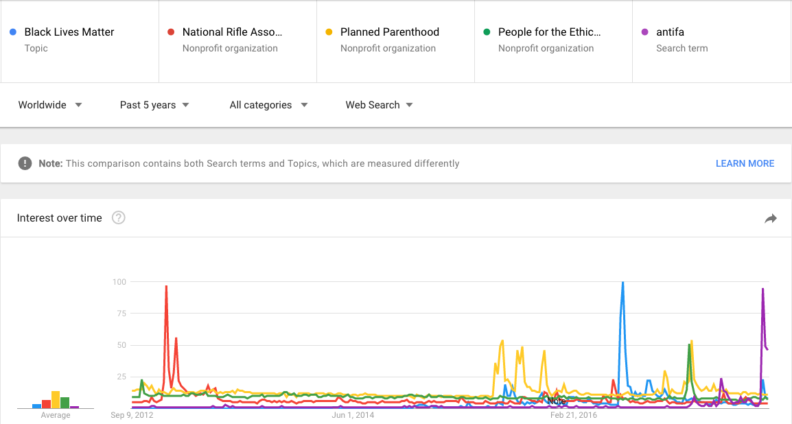
Antifa now faces the two attacks that were long ago formulated against other activist groups. One: antifa is composed of violent morons who carry upon them body and pubic lice species yet to be classified by science. Two: antifa is counterproductive to their stated goal, e.g. getting to whack-a-mole pamphleteers is actually a powerful incentive to suffer for fashion.
I suspect both criticisms are true, but whatever—does the first imply the second? Is violence bad evenwhen it is effective? Because if it isn’t, then claiming that “antifa are thugs too!” is worse than useless. Your opponent can simply reply, “So what? Nazi ain’t got no humanity.” And now that you’ve cried wolf, that guy won’t listen when you claim that, in this instance, violence might not work. So you better be damn sure about your answer: what price should be paid for the sin of hypocrisy?
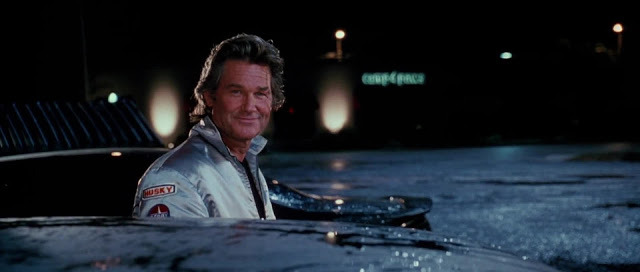
There is always an outside that a person considers unworthy of life…
Quentin Tarantino has dedicated his career to answering this question.
QT has seen too many movies for it to be any other way. If you consume enough art across epoch and genre, you can’t help arrive at the Susan Sontag #redpill that content doesn’t matter all that much. All art is genre fiction no matter the pretensions and our lizard brain judges accordingly. Sure, thematic analysis is fun to play with after the fact, but if a movie has the right tropes in the right places—femme fatales, tough muchachos, pretty pictures, happy ending—well, you can convince yourself of just about anything.
Take, for example, Death Proof. Genre: exploitation/slasher. Synopsis: hot babes go for a night out, ex-stuntman stalks and runs ‘em down in a death-proof car; stuntman rinses and repeats with another girl gang except they turn the tables and Mortal Kombat his thoracic spine. Rating: extremely badass, you should check it out, anyone who tells you different is a pleb.
Namely: some people complain that the movie has toomanyscenes of girls talking and that their QT-isms are an unrealistic depiction of an actual group chat. The characters bicker lewdly, if that’s a thing, alternating between weirdly masculine sex-as-status teasing and pledges of undying affection, the verbal equivalent of a catfight, which is maybe how a creepy foot fetishist would imagine female dialogue, but…
Nope, still pleb. Tarantino wasn’t the first guy to invoke this trope, it’s part of the DNA of the slasher genre, as old as Jamie Lee Curtis getting razzed for her virginity in Halloween. Misogyny, maybe, but also content is a spook. Slasher movies have to fill 70 minutes before the eponymous slashing, and they also have to make you care about the outcome of said slashing without humanizing the characters so much that you get all Marley and Me when they die.
What’s the secret? Status games, the less nuance the better. Boys would watch paint dry if you said it was a grudge match. Catfighting is no different than the elaboration of powers in a shonen manga or the suspicious glares exchanged between heist movie protagonists: it creates tension. Different value systems have been described, there can only be one, now you’re rooting for process of elimination to reveal the truth. No—you identify with that process. Hail Gnon. You could make a movie with men playing status games and being killed off bywomen and men would still find it hot; I know this because of female horrorcore rappers but also because this movie is called Faster, Pussycat! Kill! Kill! and it’s 10/10. Incidentally:
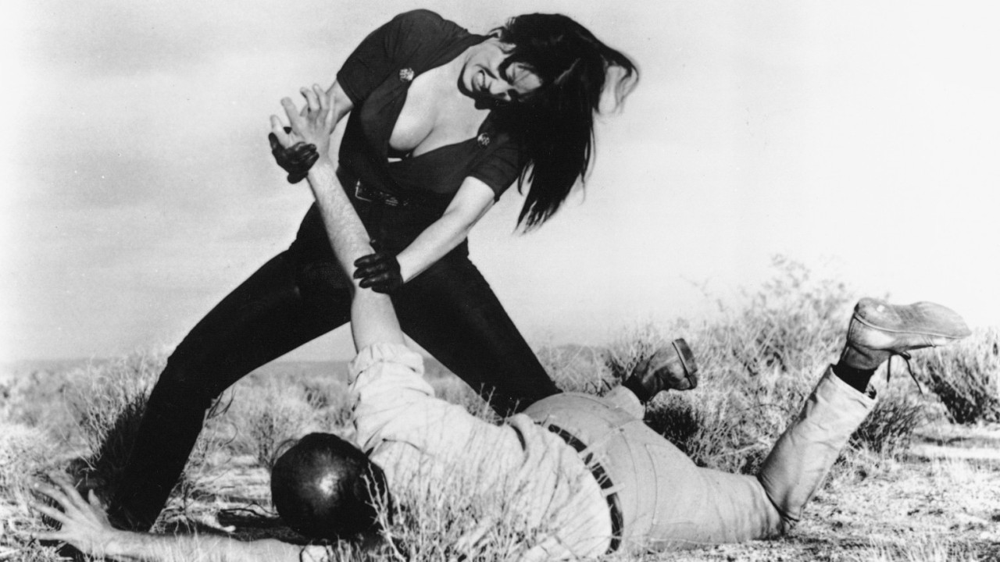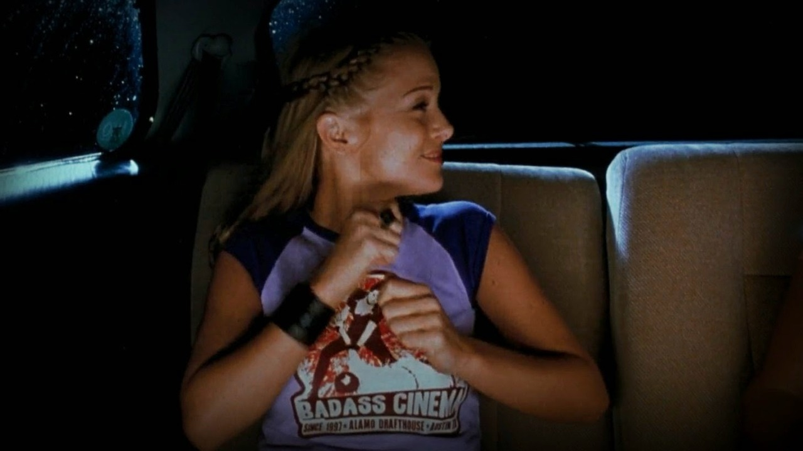
This is referencedagain in the final scene of the film, in which the viewer cheers on our group of heroines as they beat to death a pleading, injured man.
Here’s the hot take: tote bag feminists are wrong to think that drawing boobs on Powergirl is a male attempt to diminish her power. On the contrary, the more vampire slaying the better. Sexualization is an attempt to gain access to female power: if she wants The Phallus badly enough, she might just lend her power to you. Obverse: men are idiots for thinking that the existence of rape fantasies means that women secretly want to be raped. There’s an image floating around the manosphere about that terrorist with a heart of gold, Ted Kaczynski, who was gauche with ladies in the free world but deluged in love letters upon his incarceration. Before you can say medium = message, someone tragically rendered celibate by their 23andMe results will point to this as proof that women “only want serial killers.” Newsflash: Kaczynski is serving eight life sentences without possibility of parole. Do you think the fangirls didn’t know that? Rape fantasies (theoretically “hot”) are qualitatively different than being raped (“unimaginably horrific”) because you construct the former, can turn it off at any time. The fantasy victim is assaulted by a terrible power, but the person who selects and controls that power is…
Of course it is, cough, problematic, that slasher movie girls display power through HPV vaccinations while male zombie apocalypse survivors soliloquize on whether suicide is inevitable in the absence of God. But once you sexistly set up that women should be valued by their sin, the wages = death equation is not in and of itself misogynistic. No, it’s just inevitable: sex-as-status tension can only be relieved in two ways and one of them is frowned upon in theaters. Film crit cliché and Kraftwerk song, I know, but: watching a movie renders you impotent—you can’t interact with the sexy image on the screen—except through what the camera will allow.
That’s why you are complicit in the murders that occur in the first half of Death Proof. The ex-stuntman—old, a teetotaler, star of TV shows long forgotten (and played by once-famous Kurt Russell)—is as impotent as you are, capable of getting a deleted scene lap dance but zero penetration, and when he gets in his car to commit vehicular homicide x4, he looks at the camera and smiles. Because you’re right there with him, waiting for the money shot. It would be nice to fuck, but you’ll settle for a murder. Except when it actually happens, played four times for your amusement, it’s horrible—a face melted off by a tire, a wet leg flapping in the street. Throw in a Wilhelm scream. Wasn’t that what you wanted? Are you not entertained?
It’s all perspective, my man. For all the short shorts and naughty words, the girls plan and backup plan ways to prevent unwanted sexual advances; two of them have boyfriends and one is texting a crush trying to seal the deal; they discuss and decide against inviting the opposite sex to their lakeside vacation. But that’s not what you see from the outside. That’s not where your attention is drawn, wandering the club and editing your .jpg of grievances. For you, dancefloor means sex, choker necklace means slut, and being a slut means she would never sleep with you. That’s a personal insult. And that means that nothing else matters.
Which is insane. This isn’t an argument for or against promiscuity, the point is you don’t even know promiscuity looks like. You know symbols, and for that matter, why those symbols, where did you learn those? Brazzers? If you’re gonna be mad at a thing you should at least be mad at the thing itself, not at whatever fucked up fetish you’ve imposed on reality.
There’s a scene midway through the movie where QT tips his hand. The second girl gang is lounging in a car, one of them dangling her feet out the window. The ex-stuntman approaches, you assume his perspective, and maybe because it’s an old grindhouse film…
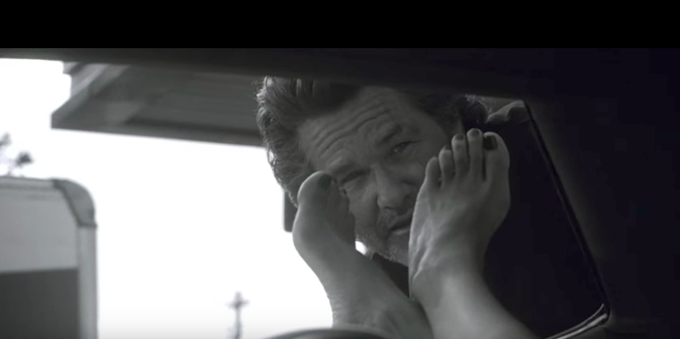
…but the color goes out, and everything is black and white.
Which, speaking of:
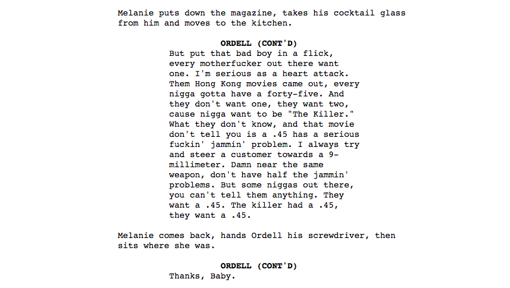
Jackie Brown is first and foremost a movie about being extremely cool all the time (you should watch it). The plot is an excuse: briefly, Pam Grier (airline stewardess), Robert Forster (bail bondsman), Samuel L Jackson (arms dealer), Robert De Niro (ex-convict), Bridget Fonda (stoner surfer chick) and a couple Feds each try to nab a briefcase holding $500K.
Jackie Brown is secondarily a movie about how race shapes each and every human interaction, but that description makes it sound like a Very Special Episode, and that couldn’t be more wrong. The movie is gleefully amoral, in fact lapses from pure MacGuffinism are treated as intolerable weakness, e.g. Jackson to De Niro:
ORDELL: You know what your problem is, Louis?
Louis doesn’t say anything, he just puts his hands in his pockets.
ORDELL: You think you’re a good guy. When you go into a deal you don’t go in prepared to take that motherfucker all the way. You go in looking for a way out. And it ain’t cause you’re scared neither. It’s cause you think you’re a good guy, and you think there’s certain things a good guy won’t do. That’s where we’re different, me and you. Cause me, once I decide I want something, ain’t a goddam motherfuckin’ thing gonna stop me from gittin’ it. I gotta use a gun get what I want, I’m gonna use a gun. Nigga gets in my way, nigga gonna get removed. Understand what I’m saying?
Apparently not, because De Niro later makes this mistake and gets popped.
For these characters, race is just another weapon. When Jackson meets Forster for the first time, he lights a cigarette, puts his feet up on the desk, and taps out the ash in a partly full coffee cup. Then he points out a photo of Forster with a black employee. “Y’all tight?” “Yeah.” “But you his boss though, right?” “Yeah.” “Bet it was your idea to take that picture too, wasn’t it…?” In their second encounter, Jackson, trying to get bail for Grier, pulls the same trick:
ORDELL: Man, you know I’m good for it. Thousand bucks ain’t shit.
MAX: If I don’t see it in front of me, you’re right. It ain’t shit.
ORDELL: Man, you need to look at this with a little compassion. Jackie ain’t no criminal. She ain’t used to this kinda treatment. I mean, gangsters don’t give a fuck - but for the average citizen, coupla nights in County fuck with your mind.
MAX: Ordell, this isn’t a bar, an you don’t have a tab.
ORDELL: Just listen for a second. We got a forty-year-old, gainfully employed black woman, falsely accused -
MAX: Falsely accused? She didn’t come back from Mexico with cocaine on her?
ORDELL: Falsely accused of Intent. If she had that shit - and mind you, I said “if” - it was just her shit to get high with.
MAX: Is white guilt supposed to make me forget I’m running a business?
But Forster—male lead, the “good guy”—plays his version of the race card and flips the script.
Example 2: Bridget Fonda, surfer gal, plots to betray Jackson, who “moves his lips when he reads,” “let’s say he’s streetwise, I’ll give him that.” But Jackson knows that she sees him that way, it makes her predictable, which is why he can keep her around: “You can’t trust Melanie, but you can always trust Melanie to be Melanie.”
That’s not the half of it. Jackson talks a soon-dead man into getting in the trunk of an Oldsmobile, houses a homeless addict in Compton and tells her it’s Hollywood; he lies effortlessly, and when drafting your fantasy friend group you should be aware that people who lie effortlessly do it because it’s fun. Threatening someone gets you an automaton who will system 2 your demands and nothing more. Deceiving someone gives you control over that person’s soul. So Fonda’s stoned delusions of manipulating him—which in fact make her easier to manipulate—are part of her appeal. Translated: “She ain’t as pretty as she used to be, and she bitch a whole lot more than she used to…But she white.”
Except Fonda is manipulating him. She’s spent her adulthood as the side piece for Dubai businessmen and Japanese industrialists who—though she doesn’t even speak the language—get off on the fact that she’s a haughty blonde who thinks she’s better than them, thinks she can manipulate them. But since they’re paying for rent and weed, doesn’t that mean…?
Example 3: Pam Grier as Jackie Brown.
From more Sam Jackson than Sam Jackson to mumblecore for Medicare, Jackie outsmarts everyone and it’s not even close. The Feds lean into their uniforms but she doesn’t miss a beat: urbane dinner guest in one scene, “panicked, defensive, unreasonable black woman” in another. Of course the movie ends the way it does, of course. Jackson steps into a dark room. Jackie screams “he’s got a gun!” And a cop pulls the trigger. You can’t always beat the system, but if you try sometimes, it just might beat who you need.
Why does Jackie win? The canon explanation is that she’s an airline stewardess: her job is to tell people of all origins what they want to hear. The meta explanation is she’s played by blaxploitation star Pam Grier. The gimmick of Grier movies like Coffy and Foxy Brown is their exaggeration of the audience’s favored tropes re: sex and race—say, hypersexuality and fashionable/wearable blackness. But the punchline of these films is that on-screen, Pam Grier with an afro is disguising herself as an high-class escort to fool the baddies: “The gentlemen you’ll be meeting this evening have a preference for…your type.” And then she kills them.
So it’s true that these films let you "exploit” a caricature, but the flip side is that anyone who can turn that caricature on and off gets to exploit you. And that seems to be Jackie Brown’s realist take: not that racism is the Original Sin for which Thou Must Atone—because everyone sees race and is selfish besides—but rather that it makes you a sucker. And the flip side: by capitalism or by meme magic, the world will always conspire to show you what you want to see. Choose wisely.
If Jackie Brown accepts that racism is inevitable, Inglourious Basterds sets out to prove that it’s also kind of fun.
It’s telling that InglouriousBasterds posters are push-pinned on the walls of fraternity houses right next to Scarface and The Wolf of Wall Street.Three movies, three sets of protagonists who happen to be amoral, masculine, and white. Sounds like a diss, but who are creatine-chugging white boys supposed to look up to? Chris Pratt? You can just tell that guy was grown in a test tube. There’s a reason Tarantino movies are popular and there’s a reason I’m talking about them instead of Buñuel or Tarkovsky and it has something to do with “making intensive use of a major language” and the twenty-somethings desperate to identify with a character named “Bear Jew.” And the above scene is indeed, “sick af.” Goes off without a hitch except when the Nazi says that he got his medals for bravery, and then there’s a split-second of—what, annoyance? Like, stick to the script, asshole. You’re sure as hell gonna get it now.
But I’m sure you’re aware that’s the joke, that once you got Ennio Morricone in the background you can justify anything. The Basterds “ain’t in the prisoner taking business”; they scalp the dead and maim the witnesses they leave alive. There’s no panorama of concentration camp horrors, no humanizing backstory, no evidence of any softness save boyish joy in the art of cruelty. Halfway through the film a young man celebrating the birth of his son is shot dead after surrendering in a Mexican standoff; the Basterds shrug and move on. At the climax of the film, a movie theatre full of Germans is exploded, shot, and burned to death. The modern viewer can’t help but cheer.
The opening chapter, Colonel Hans Landa vs. the outgroup under the floorboards, sways your sympathies in the opposite direction. No, it doesn’t make you hate the French or the Jews. But the tension—the silence and the ticking and the mounting requests and insinuations—is so unbearable that you can’t help but wish for someone to pull the Band-Aid. And the camera can’t do that. Only characters can. Only the character driving the action, and Landa drives the action in his every appearance. Something has to happen—and like the man onscreen, you cave.
Hans Landa alone seems to understand that he’s in a movie, which is perhaps why he’s so polite, so witty, so manically overacted. Perhaps this is how he sees through the Allies’ tricks and disguises: he assumes everyone else is an actor as well. And perhaps this is the apologia for his crimes: he’s just playing a role. The Basterds loathe the Nazis, but Landa bears no animosity towards the Jews, can empathize with them quite easily—it’s just, he likes to play detective and the Nazis were hiring. Is that really worse? Didn’t both the Walrus and the Carpenter eat as many as they could get?
And so, near the end of the film, when Landa cuts a deal to exchange his Hugo Boss for Levi Strauss, he asks of his prisoners the one question that would matter to a character in a period piece: “What shall the history books read?”
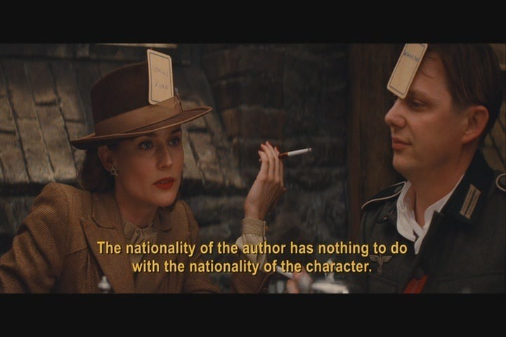
Landa’s argument, of course, is a load of shit.
In Inglourious Basterds, every disguise fails. The British film critic-turned-agent is unable to play the Nazi he’s seen on-screen. The German actress is revealed to be an Allied spy. The vengeful Shosanna is revealed as a sweet Jewish girl; the baby-faced Nazi lusting after her is shown to be a monster. The propaganda film burns. Only Lieutenant Aldo Raine and one Basterd make it out alive, and that’s because they’re American, i.e. monolingual.
Perception is a slave to narrative, but narrative has zip zero zilch nada to do with reality. The author is dead. Was Triumph of the Will a “good movie,” technically proficient and even emotionally moving? Absolutely. Could the director’s intentions have been “good,” apolitical, an attempt at beauty but nothing more? Unlikely in this case, but possible. But was Triumph of the Will “good”?
This is the obvious yet unswallowable truth: sometimes good people do bad things. “Nazi ain’t got no humanity”? How many films have Nazis with wives, mistresses, children, pub games, medals for bravery? And yet Lieutenant Raine’s opening polemic is correct: the foot soldiers of the Third Reich worked for a Jew-hating, mass-murdering maniac: they needed to be destroyed. Reality isn’t Disney, where internal beauty works its way external. Reality isn’t even so kind as to match intentions with consequences. The American (Union) soldiers fighting against the Nazis (Confederacy) may have been motivated by every bit as much hatred and bloodlust, and yet they were necessary, they were the good guys. FYI—that’s irony.
“So you’re saying we should punch the alt-right?” Are you an idiot? The Nazis weren’t bad because they were Nazis, they were bad because of the things they did. If you actually think that punching a teenage Kekistani is going to bring down the New World Order, go ahead, but stop pushing the pillow of identity over the mouth of reality.
The goal of the System, the sum of vectors going both left and right, is to keep people arguing about abstractions of violence so they won’t deign to consider the ugliness of pragmatism. The radical left will asseverate that violence is justified, refusing to question whether their particular brand of protest is effective; the alt-right will keep rallying against cropped image lunatics, the finest examples of white genocide the media has to offer, never seriously considering that sometimes people lie on the internet; and “““centrists””” will deduce that since violence is never okay, since everyone is so irrational, nothing can be done. But that’s still a perspective: it’s the perspective of the camera.
Fuck that. This essay is a condemnation of anyone who thinks that the hypocrisy of the outgroup disproves their complaint, of anyone who thinks that good intentions are enough to absolve you from sin:
Trigger warning for everything that follows: the coddled, over-sensitive, “triggered” millennial crybaby does not exist. Hold your applause—the COSTMC is an oxymoron because coddling does not sensitize, it scleroses. Have you met these people? They can’t feel an emotion without an audience and a week to rehearse. The performative offense of this group results from high emotional tolerance, not low; sad-rage is heroin to everything else’s Motrin, and no matter how vast the safe space, some kids are gonna hang at the outskirts hoping to score.
Of course, even the phoniest opportunist has a few real triggers—the type that precludes rage because you’re numb in the fetal position. And of course, there are many uncoddled e.g. traumatized people who are genuinely vulnerable to the many, many instances of genuine cruelty and callousness.
Every community with a code of conduct is a safe space to some extent. My lawyer advises no comment on whether safe spaces are good or bad in principle, because it depends: who is being included, who is being excluded, where will they go, and who is enforcing the rules.
My concern is the way these debates are settled. And when the excluded protest against political correctness—that human resources plot to merge all safe spaces under one state capitalist thumb—they ditch culture war bushido and strike at whomever can be hurt the most.
What you have to understand is that the PC debate is a farce. When the public demands a witch for the stake, the NYTimes selects David Brooks,
perhaps the most balding, white, sanctimonious chump at a newspaper full of balding, white, sanctimonious chumps. Herearefourcritiques; don’t read any of them unless you still find it exciting to watch a strawman burn.
What’s more interesting is that while Brooks criticizes upper-middle-class culture for being “laced with cultural signifiers that are completely illegible unless you happen to have grown up in this class,” his article is nothing but illegible cultural signifiers. Which, duh, he’s writing for the Times. Brooks thus renders himself irrelevant (which was the point): his critics focus on his blunder of political correctness (the high school grad intimidated by a chicken pomodoro) and dismiss him as classist accordingly.
Lesson: Anyone who opposes political correctness from within will lose and be humiliated. Even without the unforced error, Brooks could have been dismissed as rich and white. His archives could have been mined for hypocrisy. Even a charged non sequitur would have crushed his argument: “So it’s no big deal that it’s legal to murder transpeople in all fifty states? No, I’m David Brooks, better focus on political correctness!” Of course, plenty of non-bourgeois oppose PC, but you’ll never hear that point of view in the Times because, yikes—internalized racism.
The result is that the anti-PC viewpoint is only taken seriously when it refuses the framework of PC. I don’t mean “taken seriously” like there is a meaningful debate. But when an internet troll calls you, say, “a fucking spic faggot,” you can’t reply “hah, well that just shows your heteronormative, colonialist assumptions!” without looking like a wimp. You have to reply with equal bile, which smells of hatred, maybe fear. And it’s no fun to be on the receiving end of hatred, but it’s better than being treated—like Mr. Brooks—with contempt.
Trolls, like catcallers, flashers, and school shooters, are men who ran the numbers and found: being hated > being invisible > being humiliated in the official channels. The first two go back to chimps, the third variable is society-dependent, and wowza does ours fuck it up. Men want to become masculine, citation needed, and when society shit-talks the honest path to manhood then it is inevitable that those foolish enough to listen will turn to the black market. And once that’s your game…
This blog is far from politically correct, but I try to mock only the deserving— bureaucrats, demagogues, cowards, and conformists—and for behavior, for the things people can change rather than those they can’t. But people tend to be insecure about the things they can’t change, and it just so happens that in America insecurity is always wound up in sex. Every debate about safe spaces thus devolves into a debate about gender: a catalog of body dysmorphisms, a who’s who of racial castrations, cuckold, bitch, cunt, whore, freak. You’d think everyone would be against this level of discourse, but gun control means one thing on Park Avenue and another thing entirely in Wichita. The law, in its majestic equality, forbids both the popular and unpopular from being unpopular. Calls for PC go nowhere because cruelty is the best weapon some people have.
Idiot [unemployed, probably no friends]: “So you’re sympathizing with racist, misogynist trolls. Wow. Just—I can’t even.” I didn’t say anything about sympathy. I said that a society gets what it pays for. IMHO, most shock-value trolling is both ineffective—it strengthens the case for Big Brother—and morally disgusting. But it’s a symptom, not the disease. Like oxycodone, trolling is recourse for people with nothing better to do, and like The Opioid Epidemic, the hand-wringing has less to do with fixing the problem than with making it so consumers don’t have to look at something ugly.
The content of trolling is thus extremely not the issue, but even so, I’ll take the bait. To accuse someone of failing at gender is the worst sort of punching-down. It’s not just hateful, it’s lazy, it’s bullying the foreign kid to make up for getting your ass beat at home. And it’s dumb. Forget about the moral argument—my critique is that the gender police are not even wrong.
Judith Butler (Gender Trouble), who coined the term “performative gender,” the antecedent to “sexuality is a spectrum,” has reached Antichrist status in some circles and in fact received a personal diss from Pope Benedict XVI. She’s good, and if you wanna throw down you gotta throw down with the best. So: Does Butler write like a pedant getting paid by the syllable? Does she open each topic with a chain of passive-aggressive rhetorical questions? Does she have the worst fanbase this side of Harris and Klebold? Does she have a point?
Hemlock time. How do you define gender? “Gender is a set of behaviors and attributes that correlate with sex.” Okay—what’s sex? “Aren’t you a doctor or something? XY and XX.” I’m flattered by the appeal to authority, but weren’t you the guy complaining when the CDC lowered the normal testosterone range? How do you feel about androgen insensitivity syndrome?
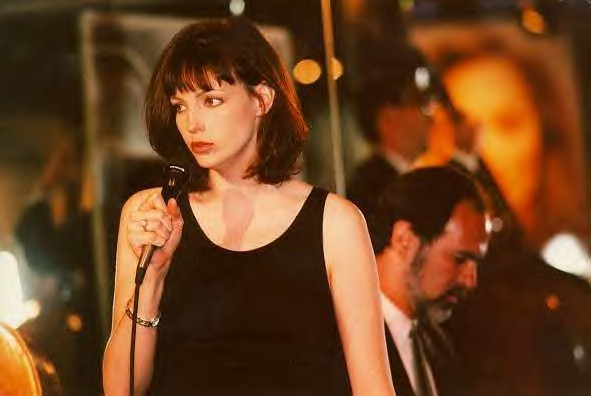
You can deny your eyes and insist that having an SRY gene makes Eden Atwood male, but from a medical perspective Eden is estrogenized, at risk for osteoporosis, and going down in the chart as an F.
“Look, fella, I know a dime-piece when I see one.” So modify your definition: hormone levels, fertility, waist-hip ratio, empathizing over systematizing, long bathroom lines, 10 Things I Hate About You…The first problem is that all of these traits exist on, sorry, a spectrum, from menopausal women to full-figured men. The choice of which traits to include—and where to draw the cut-offs—and if the division is binary or quaternary or nullary—is just like, your opinion, man (woman/they/them). The bigger problem is that now you’re defining sex as gender.
This reduces your original statement to, “Gender is a set of behaviors and attributes that correlate.” Which is true. And as far as stereotypes go, gendered ones ain’t bad, maybe even necessary to function, the guy wearing a V-neck probably does like shaving his pubes. But they are still stereotypes, man-made, imperfect, and punishing to those who do not conform. I’m no cultural relativist, some people suck and deserve cold and swift judgment, but is the presence or absence of armpit hair really the hill you want to die on?
There’s a practical argument to be made against fractalized gender: it’s confusing. With 3^^^3 possible sex-gender-orientation combos, how are kids supposed to know how to grow up? Aren’t imperfect gender roles better than 24-year-old otherkin? I hear you, guy wearing a Harley-Davidson jacket and listening to Mötley Crüe, but Tumblr semantics are a consequence of twenty-teen spirit, not the cause. If we weren’t arguing about the gender binary (and before we were) we’d be arguing about the range of femininity or masculinity; the crusade would be for pixie cuts and stick-and-poke tattoos to be considered as feminine as Brazilian butt lifts. Don’t be fooled by words—do you really want society to have one idealized template per gender? How would that ideal be decided? Majority rule?
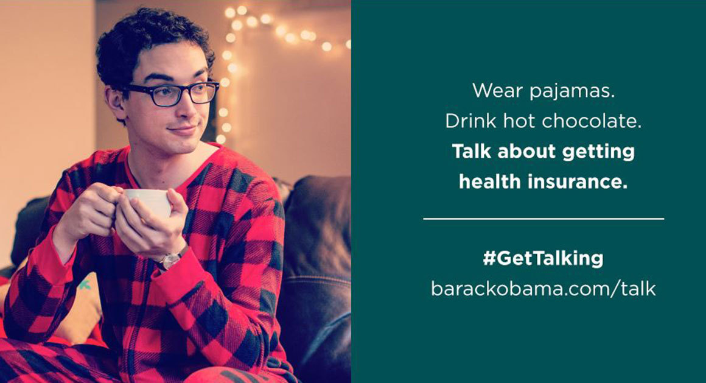
There’s a hilarious overlap between the people who get mad about preferred pronouns and those who call for a return to “traditional masculinity.” The idealization of some Hollywood-ified tradition isn’t the problem; if you want to roleplay a fursona, go ahead. No, what’s pathetic is the begging. Rather than be a man, in spite of the system, you demand validation from the systemfor aspiring to be a man. Being against identity politics is the new identity politics. That’s why right-wing culture warriors are so into the idea of crybaby millennials—it’s comforting to believe that you’re actually strong (since you don’t drink from plastic water bottles) and that anyone getting laid is actuallyxeno-estrogenized. Even if this was true, obsessing over it, masturbating to it, using it as an excuse for self-pity and inaction—that makes you a _ _ _ _. Four-letters. Multiple choice. Maybe hangman will teach you something.
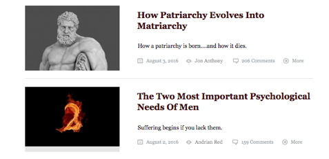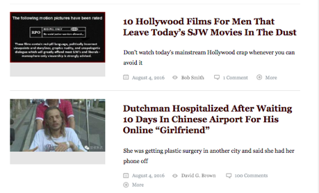
The foundationalist reasoning of identity politics tends to assume that an identity must first be in place in order for political interests to be elaborated and, subsequently, political action to be taken. (Gender Trouble)
My beliefs are no doubt way south of Ms. Butler’s on the political compass, but we agree about one thing: that ain’t a nice way to go out.
But this is precisely the way in which the laundry-is-a-social-construct movement has failed. I have held off on criticizing them because it’s too easy, when you mock Rachel Dolezal for being “transracial” you get to pretend your own self-image is meaningful, but no, all identities are power poses in front of the bedroom mirror, meaningful only insofar as they help you with the rest of the day. “Well, SCIENCE says that—” You sure you want to play that game? Again, I respect anyone who has the courage to defy their assigned caste. I have no purity objections to a transhumanist society where the tap water runs ecstasy and you can get augmented genitals at Starbucks. I don’t even mind Bushwick. The problem with the mad libs youth isn’t the slew of labels—intersectional, nonbinary, pansexual, curious kinkster, ethically polyamorous, empath, casual baby witch (mostly crystals, auras/energy)—the problem is, what are you going to do with them? And there’s a patriarchy-approved answer: buy shit and beg for validation.
If gender is performative, if identity is not necessary for political action to be taken, if the possibilities are infinite once freed from the bounds of phallogocentrism, then why is it that so many cultural subversives sound exactly the same? You know the stereotype. Bondage. Anxiety. Smoking when drunk. Circlejerks of praise for completing the most basic of tasks. Very, very bad poetry. Expensive fashion draped across waif-like models. Guilty pleasures: junk food, liquor, and problematic TV. Hated roommates. Emoji marxism. Twitter. “today i feel cute enough for a selfie, might delete it later.” “didn’t get out of bed until 2 i’m trash lol” “wow, some casual racism at work today. i’ll just laugh and someday burst because i hate confrontation. but whatever.” I’m not saying these traits describe anyone real, although they might. I’m saying: why is this the stereotype?
Discussion questions: When people type in lower case, what emotion do they hope to convey to the reader? The alt-right often asks if “liking feminine traps” is “gay”—is there anything more heterosexual than wishing you had a weaker male friend to validate your penis? Would trans rights even be an issue if the majority were FtM? How many modern protests can be summarized as “consumers demand product”? Who would win, every chafed masculinist and joyless academic or one flamboyant 19th century playwright? As Oscar Wilde put it: “Everything in the world is about sex, except sex. Sex is about power.”
Comparing politics to your favorite legends is as old as politics and legends. Herodotus used an extended metaphor between the Persian invasions of his own time and the Trojan War. When King Edward IV took the English throne in 1461, all anybody could talk about was how it reminded them of King Arthur. John Dryden’s famous poem Absalom and Achitophel is a bizarrely complicated analogy of 17th-century English politics to an obscure Biblical story. Throughout American history people have compared King George to Pharaoh, Benedict Arnold to Judas, Abraham Lincoln to Moses, et cetera.
Well, how many people know who Achitophel is these days? Even Achilles is kind of pushing it. So we stick to what we know – and more important, what we expect everyone else will know too. And so we get Harry Potter.
“But a children’s book?” Look, guys, fantasy is what the masses actually like. They liked it in Classical Greece, where they had stories like Bellerophon riding a flying horse and fighting the Chimera. They liked it in medieval Britain, where they would talk about the Knights of the Round Table slaying dragons as they searched for the Holy Grail. The cultural norm where only kids are allowed to read fantasy guilt-free and everybody else has to read James Joyce is a weird blip in the literary record which is already being corrected. Besides, James Joyce makes for a much less interesting source of political metaphors (“The 2016 election was a lot like Finnegan’s Wake: I have no idea what just happened”)
Hoo boy did he walk into that one.
Plebeians have been plebeian forever, granted, although the age of SSC’s examples (Medieval Britain?) is telling: contra the above, the distinction between highbrow and lowbrow literature exists whenever the majority of the population is literate.
But regardless, SSC (for the record, mostly Good) is being fooled by branding. No one compares the “fantasy” elements of Harry Potter to the U.S. political system. The fantasy elements are irrelevant, which is why Hamilton works just as well. Wannabe pundits compare the characters. And it is the characters, their psyches, the ambiguity that persists after two millennia of debate, that has made The Iliad stand the test of time. As clever as Artemis Fowl may be, it’s naive to pretend there’s no difference.
What makes it obvious that Deadpool (rating: R) is a kid’s movie while 2001: A Space Odyssey (rating: G) is not? Turn on the TV and flip through a few kids shows—nothing educational, I’m talking epilepsy triggers. After a couple, you’ll notice a unifying theme: everything is turned up to the max. All the characters are live/laugh/loving, fighting, crying; the soundtrack goes major or minor for every ephemeral mood. The characters have saucer eyes and exaggerated movements, The Emoji Movie being the logical conclusion of the genre, every motivation gets a musical number, these shows are MAXIMALLY EXPRESSIVE, leaving no doubt as to what emotion you are supposed to feel by the microsecond.
Please hear that I mean no disrespect when I say that this is why people with autism like Disney.
Q: Why did it feel good to watch [Disney movies] over and over again, that you kept wanting to? Watch them over and over again? How did that feel to you?
A: It felt comforting.
Q: Comforting.
A: It felt comforting.
Q: Why?
A: Because it would help me with…reducing my autism. (Radiolab)
Nothing wrong with that. Partisan bullshit aside, Harry Potter is great. But it’s important to recognize the limitations. Young adult fiction can have complex characters, worldbuilding, and rules of magic/ethics/rationality as long as the complexity is spelled out for you. “Snape was mean to Harry…but [flashback] that’s because, deep down, he was still in love with Lily…” What such stories will never ask you to do is intuit that Snape had tribulations, they assume that you have no instinct for cognitive empathy, which you don’t, which is why your politics are vapid.
(When fiction deprives you of access to any character’s mind or explanation of events, you feel the opposite of comfort: horror. Saw is not a scary film because it is nothing but explanations; a Kafka story feels “off” even before shit goes down because the world and the characters refuse to show their work.)
Young adult fiction is a stepping stone, good if it helps you get better at understanding people without a Wes Anderson narrator whispering in your ear. Unfortunately, the ability to parrot accepted opinions is often taken for the ability to derive judgments of one’s own. I’m thinking of a homestuck 13 year old who is constantly told that he/she is “so mature” for getting straight A’s and being well-spoken with the dinner guests and not ditching class to smoke brick weed with Devin. Whether or not those behaviors are good, the kid isn’t mature, he or she is well-trained, and if you keep claiming maturity then you are going to stunt development. Sorry: not having an adolescent rebellion means you didn’t complete adolescence. The result is neotenous adults who are not overly sensitive—as conservative media would claim—but rather overly dependent on external rules. Cards Against Humanity is so funny, right? You get to say bad words, but it’s only a game.
“Help, I was a gifted kid and now I’m a normal adult!” Different adjective, same problem. Once Hal Incandenza is typecast as “gifted,” everyone will find it convenient to grade him (praise/no praise) on whether he is living up to his label. How do you look gifted? You can solve P vs. NP……or you can read the dictionary. I’ll bet that every ex-gifted kid who now uses “adulting” as a verb is a fan of those faux-pretentious memes, “mfw she confuses epistemics and ontology,” fitting Wikipedia philosophy into preformed joke structures, lowbrow expressions of highbrow concepts, a few college words to suggest immeasurable depths. You do what you know: exert the minimum necessary effort to convince other people of your intelligence. But you can’t convince yourself.
The consequences are predictable. Imposter syndrome. Scrupulosity. Sexual fetishes suffixed with -play. Gushing compassion ruined by the inability to picture how one appears to the outside world. Neediness. Ill-fitting jeans. Trouble with romance, and not because they don’t know how—deep down they do—but because they cling to a rulebook (“milady”) instead of trusting instinct. They were never allowed to have instincts. For that matter they’ve never really wanted, never felt a desire that wasn’t assigned, which is why: open relationships, switched majors, medicated anxiety, and ambivalence, ambivalence, ambivalence.
I know how heavy lies the burden of wasted potential. So please take this in the gentlest possible way: you were never that great. Greatness is a meaningless thing to apply to a kid, or a college student, or any idea that hasn’t forced it’s way onto paper. The only path is forward. “It’s our choices that show what we truly are, far more than our abilities.” I think that’s Dumbledore, take it or leave it—there’s a time and a place for young adult fiction.
All of the blind men trying to describe the alt-right elephant seem to agree that anti-political-correctness is part of the picture. Maybe anti-PC isn’t the most important issue to any one alt-righter, but it’s the stance that is most widespread among them, sensitive but not specific. Okay. Why?
I’m sitting here at point of paralysis, trying to casually explain the rise of internet trolls, 4chan, hardcore gamer culture, lulz, twitter-eggs, gamergate, pepe the frog, the alt-right, the rich asshole and how they came all crashing together in spectacular ugliness…for the purposes of this conversation just know that all display a combo of 1) being virulently anti-PC. 2) being the kinds of people who have really sad, internal existences and internet they can be anonymous and escape into. And 3) a core philosophy that sees the value of what I will call “the big joke.”
That is to say that the world itself is a joke.
I feel bad for mocking a lawful good superhero, but the above paragraph is the sickly sentimentality of someone who has fed on his own vomited platitudes for too long. If I ever reach “the point of paralysis” while explaining “lulz” or “twitter-eggs,” euthanize me.
There’s a reason The Dark Knight’s Joker struck such a cord with this populace and it wasn’t just his good performance, it was his mantra: “Why so serious?” It was his ability to reign terror and tear apart hypocrisy. It was the sense power that comes with having such a freeing attitude toward the cares of society. The pure, bleak joy of nihilistic glee.
There isn’t a side. There isn’t a belief. The only goal is to burn down your side. After all, “Some men just want to watch the world burn.”
Comparisons between children’s fantasy and adult reality tend toward the inane, but there’s a particular irony here: back in ‘08, when The Dark Knight came out, every dinner party worth schmoozing agreed that the pyromaniacs in question were supposed to represent Al Qaeda. And when someone pointed this out, the accepted reply was to say something about how, well, it’s more complicated than that, you see, back in the ‘80s everyone was doing a lot of cocaine and tweaking pretty hard about the Soviet Union, and well, maybe we funded some terrorists here and there, mistakes were made, that’s all I’m saying. It’s a little naive for Christopher Nolan to act like they’re just bad.
Now the analogy has switched teams and it didn’t get any less idiotic. I too have observed that some individuals are psychopaths who care about nothing except mashing the dopamine button. I have never observed a group of such people, in fact I’m not sure it’s possible, shit would go Reservoir Dogs before you could say “defect in the prisoner’s dilemma.” What makes fascism terrifying is that most fascists are not psychopaths. Nurses get Milgram’d on the daily, told to hurt people via IV pokes and pulled bandages, often doing this when patients are demented or delirious or otherwise screaming No No No. And yet nurses are some of the most compassionate people in existence. How do they stay sane? Any violation of another requires the same mentality: this is for the greater good. Repeated like a mantra, whether you’re building a utopia or feeding the kids or preparing to shoot up a school: this is for the greater good. It’s comforting to believe that the bad guys are motivated by “nihilistic glee” because that means you aren’t one of them. “If anything, my problem is…I care too much,” you say, between sobs, as you bring your boot down on the curb.
Political correctness is defined as, “the avoidance, often considered as taken to extremes, of forms of expression or action that are perceived to exclude, marginalize, or insult groups of people who are socially disadvantaged or discriminated against.
For the moment, I hope you can get past any associations you might have and understand that the intent behind being politically correct is clear: empathy with marginalized groups.
We’re supposedly having a debate between PC and Anti-PC culture, but we can’t have a debate unless we’re really talking about what we’re really talking about…We have get away from so much of the false equivalency that surrounds this conversation…we can’t miss the only two sides that matter:
Victim and victimizer.
Here’s the thing: no.
Film Crit Hulk’s argument has such polished stupidity that it reflects a shining truth: the switch from “being politically correct” to “PC culture.” This is the sleight of hand common to all defenses of political correctness. Being politically correct is something you do. PC culture is something you do to others.
Two case studies, and hold off on your value judgments:
Intentionally misgendering someone is an aggressive act. This is true even if transgenderism is attention whoring or special snowflakism or whatever—misgendering violates the Zeroth Commandment of “Thou shalt call others by their chosen name.” You can argue that misgendering is justified, that it’s impractical to cater to every pronoun, that you shouldn’t encourage a society-wide “mental illness”—we can duke that out elsewhere—but don’t pretend it isn’t an act of aggression.
Contrast with the Harvard story: posting offensive memes in a private group chat is not an act of aggression. It may suggest poor character, it certainly suggests weak judgment, and Harvard has the right to kick ‘em out, but don’t pretend the dichotomy is between victim and victimizer when there was no victim.
Discussions of political correctness go nowhere because one team is hurt by the first example and retaliates with the second, the other is hurt by the second and retaliates with the first, and the internet makes private public so it’s impossible to tell the difference.
Film Crit Hulk spends the rest of his 8000 word essay on variations of:
So I’ll ask again: why am I doing all this? Why write about movies and politics? Yes, it’s because I give a shit. It’s because I feel insanely lucky and want to express endless gratitude. I do not consider it heroic or anything more self-serving than the simple idea that it is important. It’s because I feel compelled and passionate about it.
Because I don’t think the world is a joke.
It’s the only one we got and I’m trying to run around with 60 million other Americans and try to hold it together with duct tape. You can demonize this. You can demonize me. I don’t care.
I don’t think you should stunt like Jesus on the cross when your grand insight is "them motherfuckers be crazy.” But sure, I’m willing to buy that Hulk believes his own gospel. What he doesn’t get is that he holds the majority opinion. The Panopticon gives out mad brownie points for calling out -isms, even private victimless -isms; why wouldn’t it, you’re giving it that much more power over what used to be privacy. And maybe that’s fine, maybe if you’ve got nothing to hide you’ve got nothing to fear, but don’t say I didn’t warn you: “When a measure becomes a target, it ceases to be a good measure." If society subsidizes political correctness, then some virtuous people will be PC but so will any competent sociopath. And no matter how noble the intentions behind a policy, when sociopaths exploit that policy, exploit it to shame and punish people who haven’t done anything wrong—well, you’ve got to admit that’s kind of funny.
{kind=link}
{kind=link}